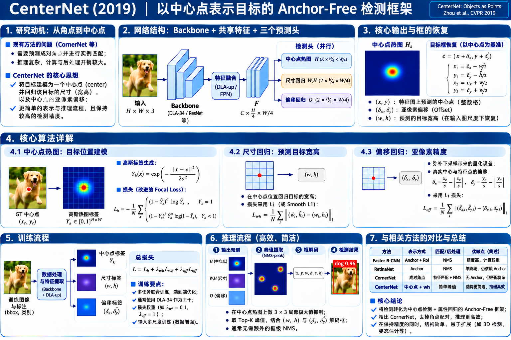

SSD / RetinaNet
每个特征位置摆放许多不同形状的先验框，预测类别与相对框偏移。需要 IoU 匹配、正负样本配置，推理需去重。
疑问：一个目标需要多少种宽高比与尺度才覆盖得好？
核心问题变了：为什么必须先枚举候选框，或寻找两个角点再配对？ 能否只找到物体的一个中心点，再从这个位置预测宽高，从而直接恢复完整的边界框？

真正改变的不是卷积核，而是目标检测的预测表示。
每个特征位置摆放许多不同形状的先验框，预测类别与相对框偏移。需要 IoU 匹配、正负样本配置，推理需去重。
疑问：一个目标需要多少种宽高比与尺度才覆盖得好？
检测左上角与右下角，用 Embedding 判断是否属于同一实例。无需 Anchor，但预测后必须进行两角点组合。
疑问：角点来自哪个目标？配对错误怎么办？
直接预测物体中心的类别 Heatmap；在中心位置取出宽高与小数偏移，就能恢复框。一个中心定义一个目标实例。
代价：中心点定位准确性和同类中心冲突变得重要。
不是 RPN，也不是 YOLOv1 的全连接输出，更没有 CornerNet 的配对 Embedding。
| Head | 输出形状（512×512 输入，stride 4） | 输出意义 | 监督位置 |
|---|---|---|---|
| Heatmap | 128×128×C（COCO C=80） | 每个类别的目标中心概率 | 所有像素都有 Heatmap 分类 Loss；GT 中心为真正正样本 |
| WH | 128×128×2 | 框宽与框高（特征图坐标单位） | 仅 GT 中心位置有 L1 监督 |
| Offset | 128×128×2 | 预测中心相对整数特征网格的偏移 | 仅 GT 中心位置有 L1 监督 |
| 合计 | 128×128×(C+4) | 一张图端到端输出的所有预测张量 | 共享 Backbone + 三个 Head 共同优化 |
不是先找候选框，也不是让整个目标区域都成为正样本，而是从 GT Box 计算单个中心点。
p̃ 是 GT 中心映射到输出特征图后向下取整的位置；σp 由目标框尺寸决定；如果同类 Gaussian 重叠，逐像素取最大值。
中心附近预测差一格通常仍有意义，直接把所有周边位置都视为普通背景会惩罚过强。Gaussian 软化邻近负样本的 Loss；它不等于给所有邻近格打同等权重的正标签。
预测单位是中心坐标。一个 GT 直接确定一个类别 Heatmap 的正中心点，无须拿成百上千个 Anchor 和 GT 计算 IoU 再分配。这减少了手工 Anchor 设计。
这里是 CenterNet 最容易讲得太浅的一步：没有框回归器的 Anchor，也能凭中心 + 尺寸得到四个边。
原论文将尺寸按特征图尺度监督；一些复现代码会通过输入图像预处理和目标坐标缩放实现同一关系。这里统一使用 R=4 的教学图像坐标。
(53,31)，输出 stride R=4。仅改变中心 Offset 与 WH 的四个值。中心点位置给出目标类别和分数。每个类别一个热图通道。
在该中心位置预测宽、高两个数，不需要 Anchor 的预设宽高比。
把 floor(p/R) 丢掉的小数坐标补回来；不参与框形状预测。
图像输入通过共享 Backbone，三条预测头各自得到监督，并将梯度加回 Backbone。
全部空间位置都计算，中心 Y=1 是正分支，其余位置使用受到 Gaussian 权重调整的负分支。
改进的 Focal-style logistic loss；α=2，β=4。
只在真实中心位置，计算预测 (w,h) 与 GT 的 L1 差；非中心位置不直接监督宽高。
框宽高的量级大，所以原论文将这部分乘以 0.1。
只在真实中心位置，计算预测 (δx,δy) 与中心的小数部分的 L1 差。
类别共用一个 Offset Head，默认权重 1。
式中 p̂ 是模型预测的中心概率，Y 是 GT Gaussian 热图标签。注意此处的 Focal-style Loss 与 RetinaNet 原式不是完全相同的写法。
这是单个像素的未除以 N 的损失贡献。真实 Heatmap 总 Loss 再按目标数 N 归一化。
把“标签是什么、谁收到 Loss、谁更新”一次讲清，而不是只写一句端到端训练。
类别 dog、框中心 p=(214.8,126.4)、宽高 (112,88)；stride 4 时：
数值为教学示例；在 512×512 图像里对应 128×128 输出。
Heatmap：每个像素/类别都参与，包含大量背景位置（但加权弱化容易样本）；WH/Offset：只取 GT 中心位置预测。
反向传播：Loss → 各 Head → 共享高分辨率特征 → Backbone。WH/Offset 没有为所有背景位置强行设置尺寸标签。
| 项目 | 原论文示例（2D 检测） | 为什么重要 |
|---|---|---|
| 输入与输出 | 训练输入 512×512；输出 128×128 | 兼顾较高的空间分辨率与计算开销 |
| Backbone | ResNet-18/101、DLA-34、Hourglass-104 | 模型并不限定单一 Backbone |
| 初始化 | ResNet 与 DLA-34 从 ImageNet 预训练初始化编码部分 | 降低检测学习成本 |
| 数据增强 | 翻转、随机缩放（0.6–1.3）、裁剪、颜色扰动 | 帮助位置/尺寸学习适应变化 |
| 优化 | Adam；DLA/ResNet 配置示例 batch=128、初始学习率 5e−4 | 原论文配置；不是通用强制参数 |
| Loss | Heatmap Focal-style + 0.1 × WH L1 + Offset L1 | 一个中心点同时监督类别/定位/精细坐标 |
真正的模型输出是连续数值张量，而不是已经生成的框；关键是如何取值与解码。
一个目标附近可能有多个较高响应，但仅保留邻域的最高峰；可调整示例中两个峰的相对强度，观察是否会出现多个中心（说明它不是万能去重）。
橙框是本轮“局部峰值”。蓝色深浅表示该位置热图概率。
一个实例以一个中心峰表示；3×3 局部峰筛选已在 Heatmap 位置上抑制近邻重复。于是原论文默认单尺度流程不使用对框计算 IoU 的传统 NMS。
紧挨着的同类中心可能互相抑制，也可能出现多个相隔较远的峰；同类别中心恰好量化到相同格子可能难以分离。原论文在多尺度结果合并时仍会使用 NMS，不应说“永远不用 NMS”。
这条路线直接接在 CornerNet（2018）后面：不是只预测中心点，而是「两个角点构框，中心点负责验证」。
CornerNet 的普通角点池化主要沿水平/竖直边界寻找最大响应；级联角点池化进一步向对象内部搜集信息，让角点不仅依赖边缘证据，也能看到内部视觉模式。
沿水平与竖直方向做响应聚合，增强中心处的表征，使中心点更容易利用目标内部的显著区域进行定位。
先由 TL 与 BR 配对构造候选框，再检查该框内部的尺度自适应中心区域是否出现同类中心点。保留时可用三个点的得分平均值表示框置信度。
教学示意：当前角点对已通过类别、几何和 Embedding 筛选。绿色虚线是候选框中心验证区域（非整框）。
图像与 GT → 生成左上角/右下角/中心点的类别 Heatmap 和 Offset 标签；角点额外学习 Embedding，通过 Pull Loss 拉近同一对象的两个角点，通过 Push Loss 分离不同实例；三条分支共同更新共享特征与对应预测头。
Center Head 不承担“只根据中心回归 WH”这一任务；它负责提供用于框验证的中心点证据。
预测 TL/BR/Center → Top-k 角点候选 → 用同类约束、几何约束和 Embedding 构造候选框 → 找该候选框中心区域内是否有同类 Center Peak → 保留或剔除 → 用三个关键点分数构造框评分并完成后处理。
有配对与验证，因此比 Objects as Points 的「中心 + WH」更复杂，但能有针对性地去除虚假角点组合。
都来自 Keypoint 思路，但回答的是两种不同的研究问题。
| 维度 | CornerNet · 2018 | CenterNet: Objects as Points · 2019 | CenterNet: Keypoint Triplets · 2019 |
|---|---|---|---|
| 实例表示 | 左上角 + 右下角 | 单个目标中心 | 左上角 + 右下角 + 中心点 |
| 主网络 | Stacked Hourglass | DLA / ResNet / Hourglass | Hourglass + 三组预测分支 |
| 检测输出 | TL / BR Heatmap、Embedding、Offset | Center Heatmap、WH、Offset | 角点预测 + Center Heatmap/Offset |
| 实例归属 | Embedding 配对 | 一个中心自然对应一个实例 | Embedding 配对后再用中心验证 |
| 定位宽高 | 由两角点坐标计算 | 中心点处直接回归 WH | 由两角点坐标计算 |
| 后处理 | 角点组合 + Soft-NMS | 局部峰值 + Top-k；单尺度无常规框级 NMS | 角点组合 + 中心区域验证 + 后处理 |
| 核心论文问题 | 能否不用 Anchor，通过角点找到物体？ | 能否只用一个中心点表达物体？ | 能否减少角点配对产生的假框？ |
中心点热图能简化匹配与解码，且易向 3D/姿态扩展；但同一类别两个物体中心过近、遮挡/极细长框、中心不明显的物体仍可能带来挑战。预测框精度还依赖 WH 和 Offset 质量。
保留了 CornerNet 双角点路线的潜在错配与组合成本，但增加 Center Verification 后能够更好过滤虚假框。它不是 YOLO / CenterNet Objects as Points 的常规中心回归头。
从输入到输出，检查你是否真正理解了预测对象、损失和推理。
Xingyi Zhou et al. — Objects as Points, arXiv:1904.07850 (2019) · 官方实现（Objects as Points）
Kaiwen Duan et al. — CenterNet: Keypoint Triplets for Object Detection, ICCV 2019 · 官方实现（Keypoint Triplets）
性能数字因 Backbone、数据划分与推理增强差异而不可直接当作公平横向排名；页面中的位置、框形状与损失数值实验均为清楚标注的教学演示。